安研通 · LabConnect
UI-2026.10-v1 · 已批准网页方向的390px补充设计
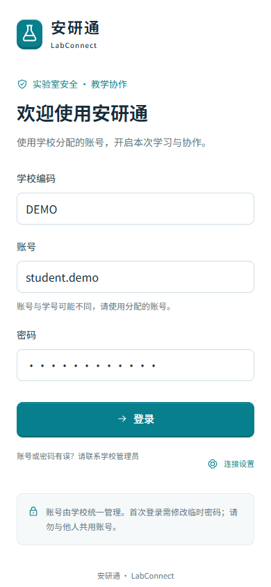
公共入口 · 390px · 示意数据
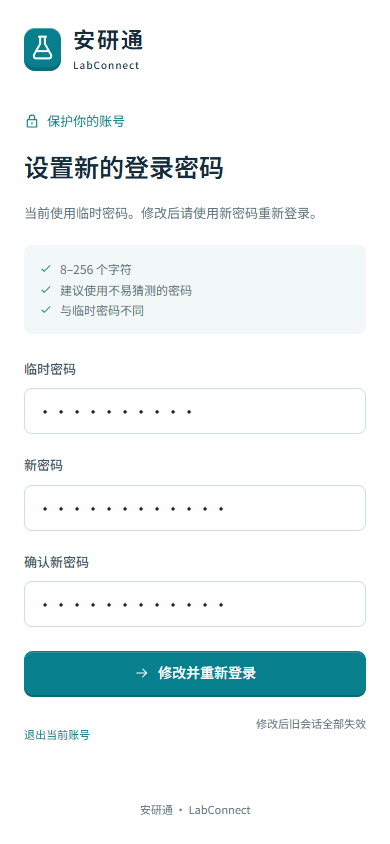
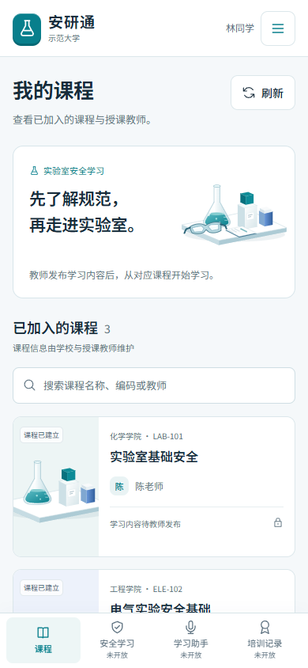
学生 · 390px · 示意数据
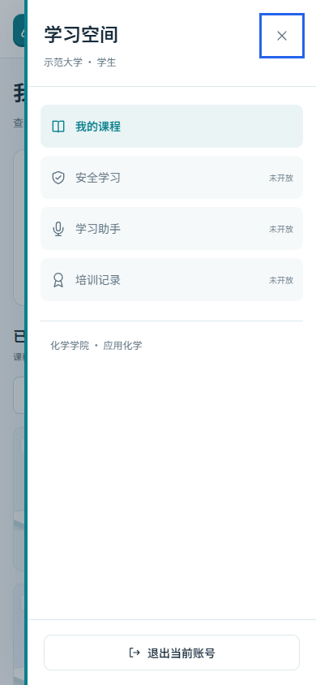
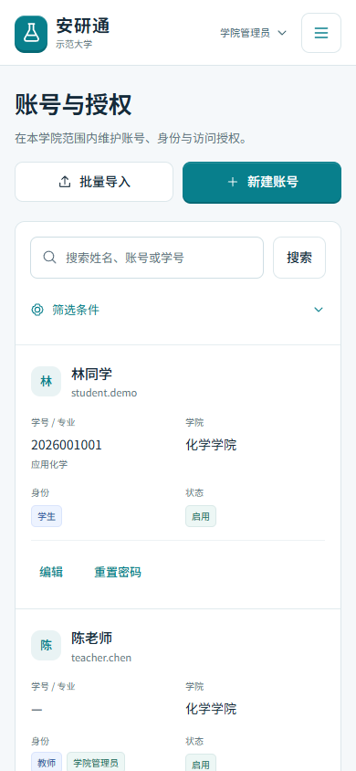
学院管理员 · 390px · 示意数据
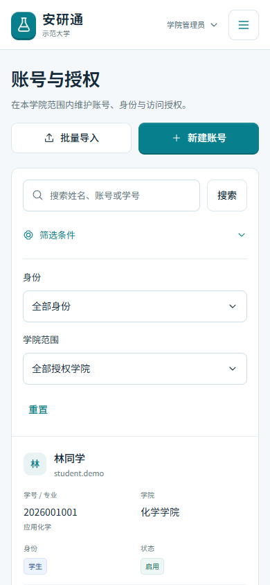
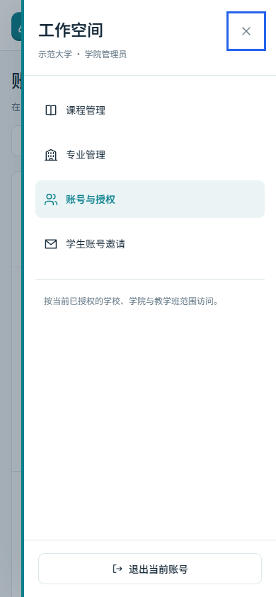
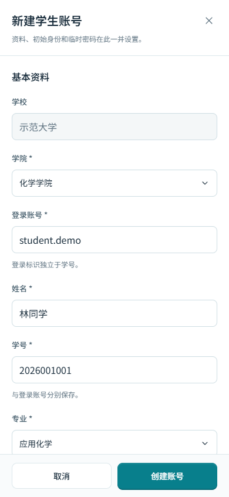
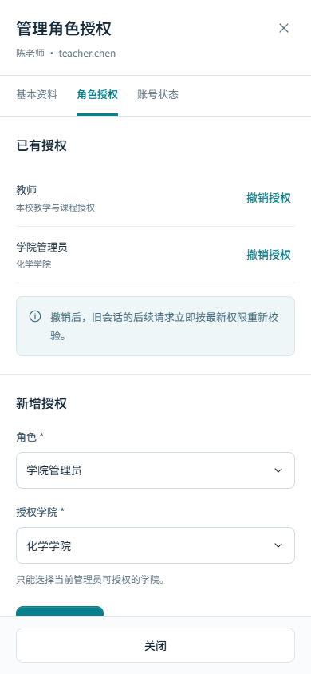
学校管理员 · 390px · 示意数据
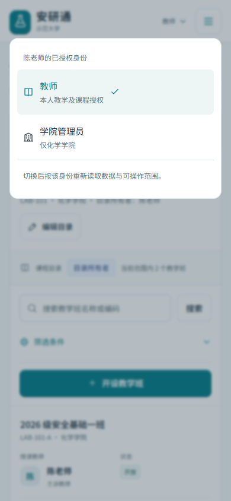
教师兼管理员 · 390px · 示意数据
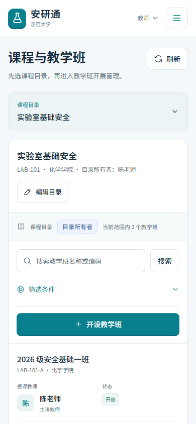
教师 · 390px · 示意数据
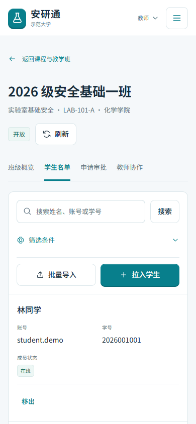
主讲教师 · 390px · 示意数据
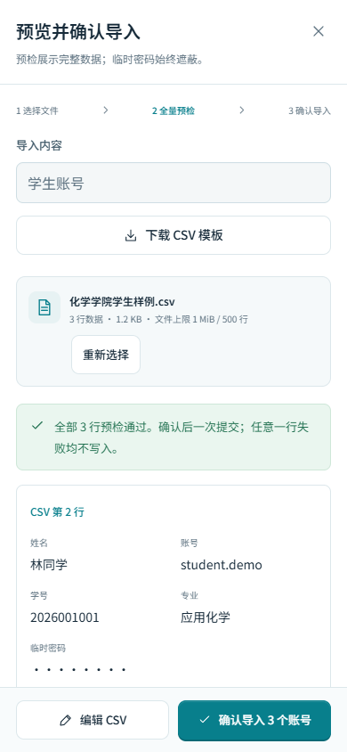
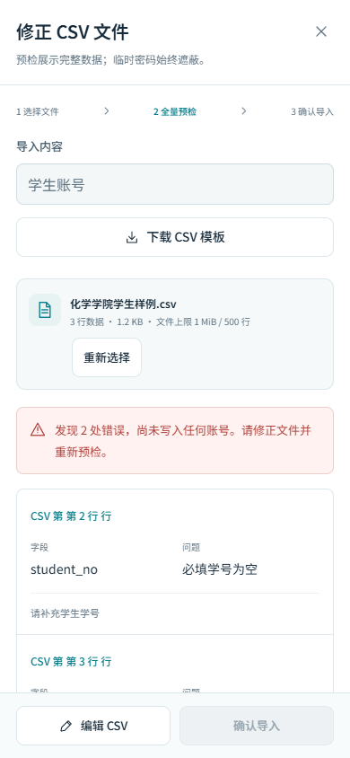
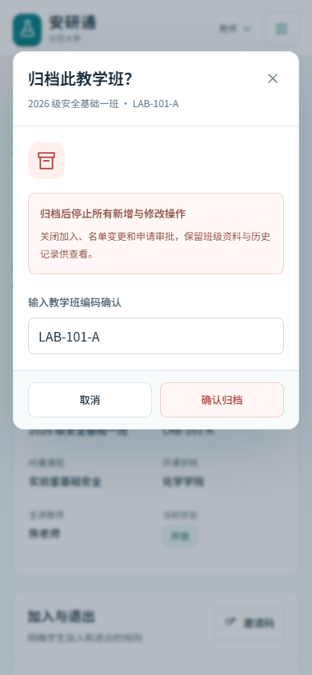
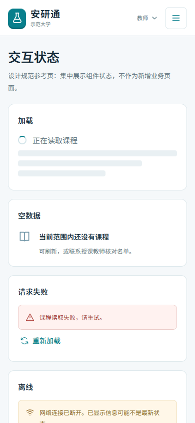
状态参考 · 390px · 示意数据